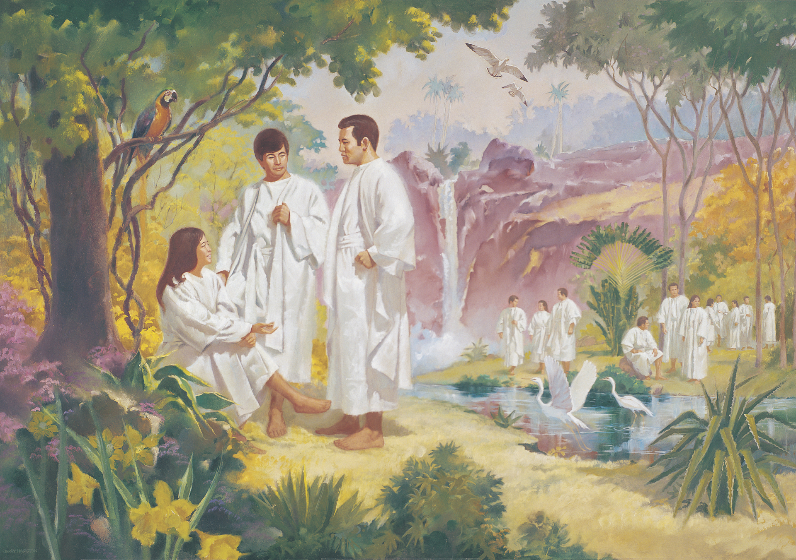

A very special hymn because of 2 reasons:
- The melody is Largo from Dvorak's New World Symphony
- The lyrics speak of life beyond the veil -- before we came to Earth
Easy piano arrangements can be printed for free here and here .
Here's a bit of the English translation found here:
Remember, my child : not long ago,
your divine parents held you in their arms.
Today you are here, marvelously present.
Your gaze still shines with the reflection of heaven.
Talk to me, my child, about that blessed place,
because for you the veil is still thin.
Remember, my child, the forests, the cities.
Can we down here imagine them?
And the night sky, is it rosy or gray?
Is the sun waiting for snow or rain?
Describe to me, my child, the color of the meadows
and the birdsongs of a forgotten world.
Remember, my child: at the dawn of time,
we were friends playing in the wind.
Then one day in joy we chose to accept
the Lord's great plan of life.
That night, my child, we promised in love,
and in faith, to be reunited.
Here are English lyrics by Lisa Bolin Hawkins:
What do you remember, child, of life before this earth—
When you were a spirit-child before your mortal birth?
Heavenly Parents held you near, not that long ago;
Your eyes still reflect the light from our first holy home.
Search your spirit's memories, before the light grows dim;
Store those visions in your heart while the veil is thin.
Tell me of that blessed place, what do you recall?
Forests, gardens, brooks, and fields? Bright celestial halls?
Rivers falling to the sea; shores where breezes blow?
Flowers like soft jewels in the woods; mountains white with snow?
Is the sunset rosy grey, lighting gates like pearls?
Do lamps beckon travelers home to that forgotten world?
Now do you remember, child, when we lived as friends?
Where we learned our Savior's plan: love that shall not end—
We will work to learn His laws; we gratefully obey.;
There, before the dawn of time, we accepted Him,
That night, my child, we promised in love,
Someday, reunited, we will raise our grateful hymn.
What do you remember, child?
Always remember Him.
Another version with English lyrics and sheet music can be found here.
And finally, here is a video in French and one in English: